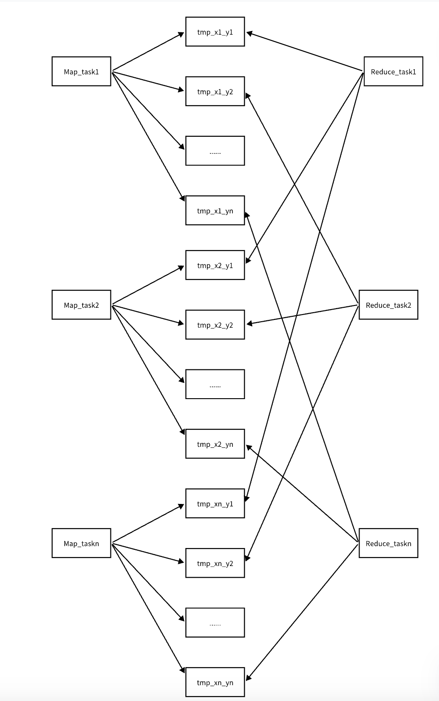

实验背景
- https://pdos.csail.mit.edu/6.824/labs/lab-mr.html
- 使用Golang利用RPC的方式实现MapReduce操作，通过搭建一个分布式集群，使用一个master来分发不同的任务，不同worker来共同获取任务并执行
- 实现代码：https://github.com/Peterliang233/MIT-6.824
实验原理
- MapReduce主要分为两个部分
- map部分：一个文件有一个map任务处理，map任务是通过将数据源分到不同的临时文件里面，这里的临时文件的命名方法为tmp-x-y，其中x是指当前的map任务的taskID,y指的是放到了第几个桶里面（这里的桶的格式为nReduce），这个第几个桶也是对应的Reduce任务的编号
- Reduce部分：Reduce任务是对涉及到的临时文件的数据进行处理，比如求和，求平均值等等，Reduce需要等到所有的Map任务都执行完成之后才开始执行，而对于taskId为x的Reduce任务，这个任务处理的临时文件需要满足文件的名称为tmpo-*-x，这个*是一个通配符，因为一个Reduce任务可以放到很多个桶里面，所以一个桶也存放了很多个Map任务处理出来的临时键值对。Reduce任务就是将一个桶的所有的键值对进行处理。

实验过程
Master节点设计
设计原理
- Master节点主要的工作是如何调度一个任务，各个worker节点通过RPC请求调用相关函数向master节点请求任务执行。Master节点这边需要提供两个函数GetTask和SetTask。
- GetTask函数用来给各个worker分配任务进行处理，这里我们需要先保证Map类型的任务被执行完成，然后才能执行Reduce任务。同时还需要考虑到执行超时的任务，在GetTask函数执行的前期，需要先将当前超时的任务收集起来（我这里设置的超时时间是10s）
- 当我们的的某一个worker的节点执行完成某一个任务之后，我们需要调用SetTask函数告知Master节点这个任务执行完成了
- 注意这里的每个worker节点执行的时候都是并行处理的，所以需要引入互斥锁控制并发
- 在所有的任务执行完成之后调用的Done()函数需要使用锁控制
任务设计
- 为了方便Master节点进行任务调度，需要设计Task任务具有哪些属性。本来按照正常的话我们需要将Map任务和Reduce任务的属性分开设计的，但是这里为了方便我们将Map和Reduce任务用同一种对象进行设计，具体设计如下：
1
2
3
4
5
6
7
8
9// 任务主要分为两种任务，一种是Map任务，主要是将数据进行分桶处理，另一种是Reduce任务，是进行统一的求和计数的操作
type TaskInfo struct {
FileName string // 一个任务处理一个文件的数据
TaskType int // 任务的类型， 1-Map任务，2-Recude任务 3-Wait任务 4-Done任务
TaskID int // 任务的ID，用来唯一表示一个任务
NReduce int // reduce任务的个数
NMap int // map任务的个数，有几个需要读入的文件就有几个map任务
TimeStamp int64 // 任务的执行时间，用来感知执行的任务是否超时
}
Map Worker节点设计
- Map节点的处理逻辑是每个Map任务去处理一个文件，Map任务和文件的关系是一一映射的关系。当Map任务从Master节点获取到任务之后，首先我们需要加载wc.so插件将文件里面的所有的字符都存放到一个大切片里面，然后将这个大切片利用哈希函数进行分桶操作放到nReduce个桶里面，这里还需要将数据进行持久化操作，所以还需要将每个桶的切片的数据都写入到临时文件里面，里面的存储的方式为json的格式
- 由于这里的写入临时文件的数据在之后进行Reduce任务的时候还需要进行读取，所以这里我们需要可以查找到Reduce任务应该处理哪些文件，这里文件之间不能冲突。这里的文件的命名方法为mr-{map_taskid}-{reduce_idx}，加入我们的Map任务的taskid为x，那么我们需要写入的临时文件的文件名为:mr-x-0,mx-x-1,mr-x-2,….,mr-x-(nReduce-1)，所以这个Map任务需要写入一共nReduce个临时文件
Reduce Worker节点设计
- Reduce节点的处理逻辑是每个Reduce任务去读取对应的临时文件进行处理，这里假设我们当前的Reduce的任务ID为x，那么我们这个Reduce任务需要读取的临时文件有mr-0-x,mr-1-x,mr-2-x,…,mr-(nMap-1)-x，所以这个Reduce任务需要读取一共nMap个临时文件。
- 由于我们进行哈希的时候是对key进行哈希然后对nReduce取模，所以我们可以保证在Map任务执行完成之后这些，一种key只能被一个Reduce任务执行。同样我们需要将最终的结果写入mr-out-x文件里面，所以最后我们会得到nReduce个最终的文件。